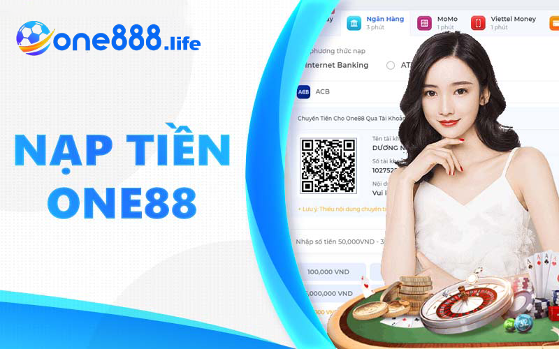
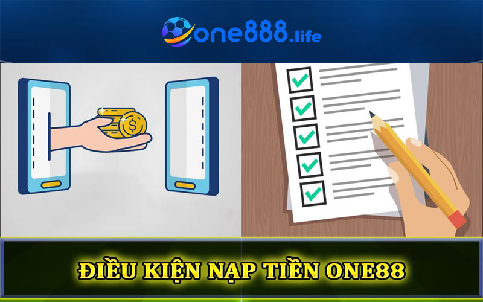
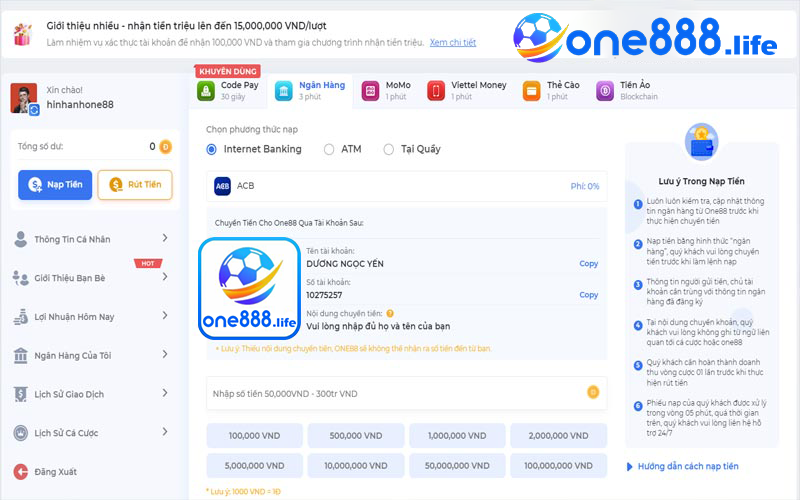
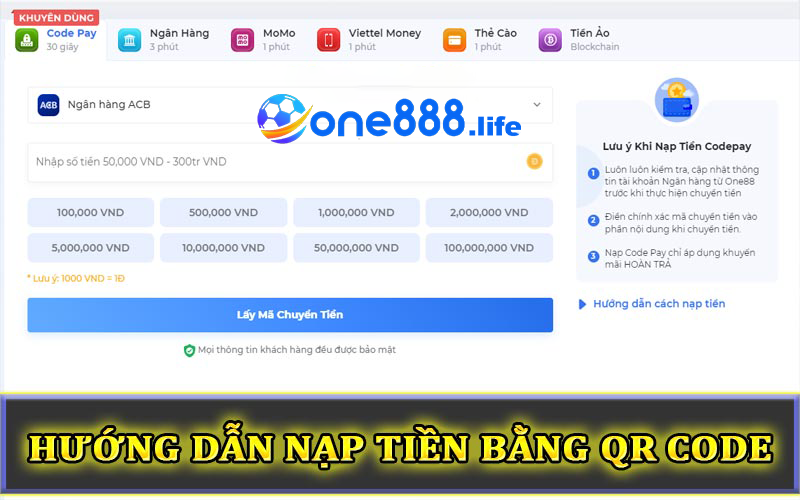

Nạp tiền One888 và những phương thức thanh toán chi tiết

Nạp tiền One888 là một bước không thể thiếu nếu muốn tham gia các trò chơi đổi thưởng tại sảnh game uy tín này. Tuy nhiên, nhà cái đã liên tục cập nhật và tích hợp nhiều phương thức giao dịch mới và hiện đại để mang lại trải nghiệm tốt nhất cho người chơi. Hãy cùng theo dõi bài viết dưới đây để biết thêm về quy trình thanh toán tại địa điểm giải trí lý tưởng này.
Tìm hiểu một số điều kiện khi nạp tiền One888
Để thực hiện giao dịch một cách thuận lợi tại One888, người chơi cần phải hiểu rõ các điều kiện để nạp tiền thành công. Dù One888 là một nhà cái nước ngoài, người chơi Việt Nam có thể dễ dàng áp dụng quy trình giao dịch và hoàn tất trong thời gian ngắn.

Dưới đây là một số điều kiện quan trọng và mục tiêu chính để đảm bảo quá trình thanh toán diễn ra hiệu quả:
- Để thực hiện giao dịch thành công, người chơi cần hoàn tất thủ tục đăng ký và được xác nhận bởi hệ thống của nhà cái.
- Để sử dụng dịch vụ thanh toán qua internet banking (ngân hàng trực tuyến) tại One888, người chơi cần có tài khoản ngân hàng và số tiền nạp phải nằm trong mức quy định của nhà cái.
- Nạp tiền One888 yêu cầu cung cấp các thông tin chính xác theo yêu cầu trên biểu mẫu giao dịch thanh toán. Sau khi đã tuân thủ đầy đủ các yêu cầu và điều kiện để đảm bảo quá trình nạp tiền thành công, anh em hãy nhanh chóng áp dụng những phương thức nạp vốn mới nhất vào ví game.
Hướng dẫn chi tiết nạp tiền One888 từng phương thức
Để phục vụ cho tất cả các thành viên, chúng tôi sẽ giới thiệu các cách thanh toán phổ biến hiện nay. Chi tiết bao gồm:
Nạp tiền One888 bằng hình thức thanh toán trực tuyến
- Bước 1: Truy cập vào đường link chính thức của nhà cái One888 tại https://one888.life. Hiện nay có rất nhiều đường link giả mạo sàn game One888 nhằm lừa đảo khách hàng. Vì vậy, anh em cược thủ cần cẩn trọng và chỉ tin tưởng vào đường link uy tín được cung cấp mới nhất bởi sân chơi.
- Bước 2: Sau khi truy cập vào trang web chính thức của nhà cái, anh em hãy đăng nhập vào tài khoản đã được tạo trước đó. Nếu chưa có tài khoản, hãy làm theo hướng dẫn trên trang chủ của sân chơi và sau đó đăng nhập.
- Bước 3: Chọn mục Nạp tiền One888 và chọn phương thức Thanh toán trực tuyến.

- Bước 4: Sau khi đăng nhập, màn hình chính sẽ hiển thị ô trống yêu cầu nhập số điểm và các thông tin bắt buộc để nạp vào tài khoản game. Tiếp theo, người chơi có thể chọn ngân hàng và tiến hành giao dịch thanh toán.
- Bước 5: Nhập số tiền cần nạp vào ví game. Số tiền này sẽ được quy đổi thành điểm để duy trì trong quá trình chơi. Kiểm tra lại thông tin thanh toán tại phần lịch sử One888 và hoàn tất giao dịch.
Phương thức nạp vốn thông qua thanh toán trực tuyến tại One888 rất đơn giản và tiện lợi.
Hướng dẫn nạp tiền One888 bằng mã QR Code
Nạp tiền One888 thông qua mã QR Code là một trong những cách thanh toán được nhiều game thủ ưa chuộng vì tính nhanh chóng và hiệu quả. Người chơi có thể theo dõi và thực hiện theo các bước hướng dẫn chi tiết như sau:

Hướng dẫn nạp tiền One888 bằng mã QR Code
- Bước 1: Đăng nhập vào tài khoản One888 và chọn “Nạp tiền” tại giao diện chính của sảnh game.
- Bước 2: Chọn phương thức thanh toán QR Code và nhập đầy đủ thông tin cần thiết cùng với số điểm muốn nạp vào.
- Bước 3: Xác nhận thông tin và chọn ngân hàng để thanh toán.
- Bước 4: Hệ thống nhà cái One888 sẽ cung cấp cho người chơi mã QR Code. Người chơi chỉ cần chụp mã QR trên màn hình điện thoại và sử dụng để vào ứng dụng ngân hàng, sau đó quét mã để hoàn tất giao dịch. Khi quá trình này thành công, số tiền sẽ được quy đổi và cập nhật nhanh chóng thành điểm tại nhà cái One888.
Đây là một phương thức thanh toán tiện lợi và hiệu quả cho các bet thủ tham gia tại nhà cái uy tín này.